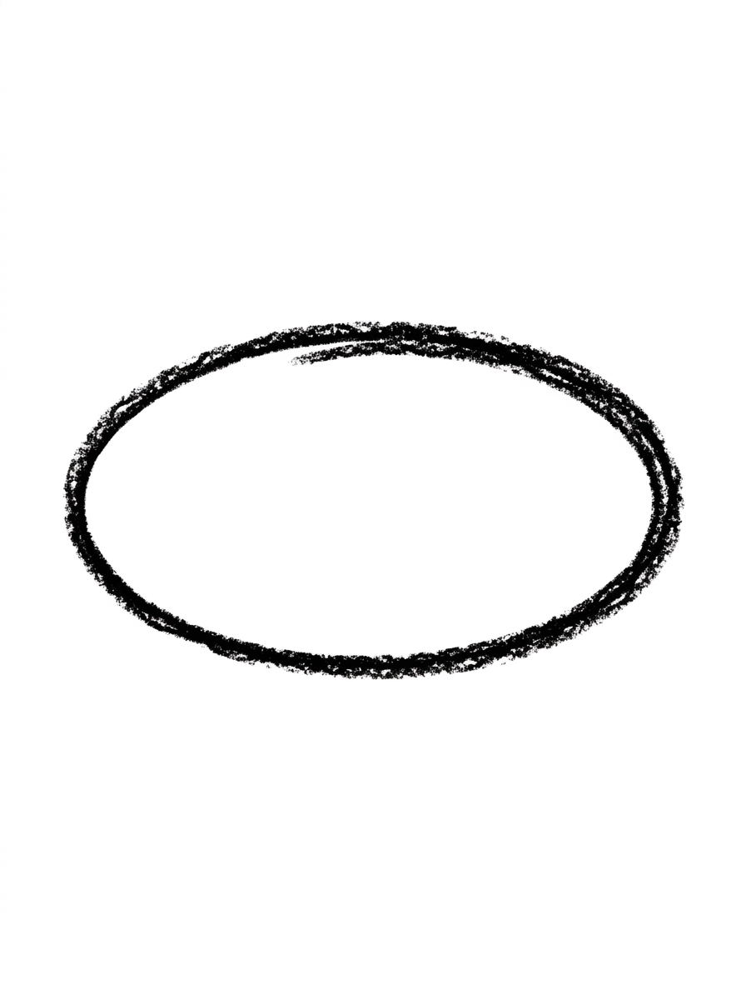
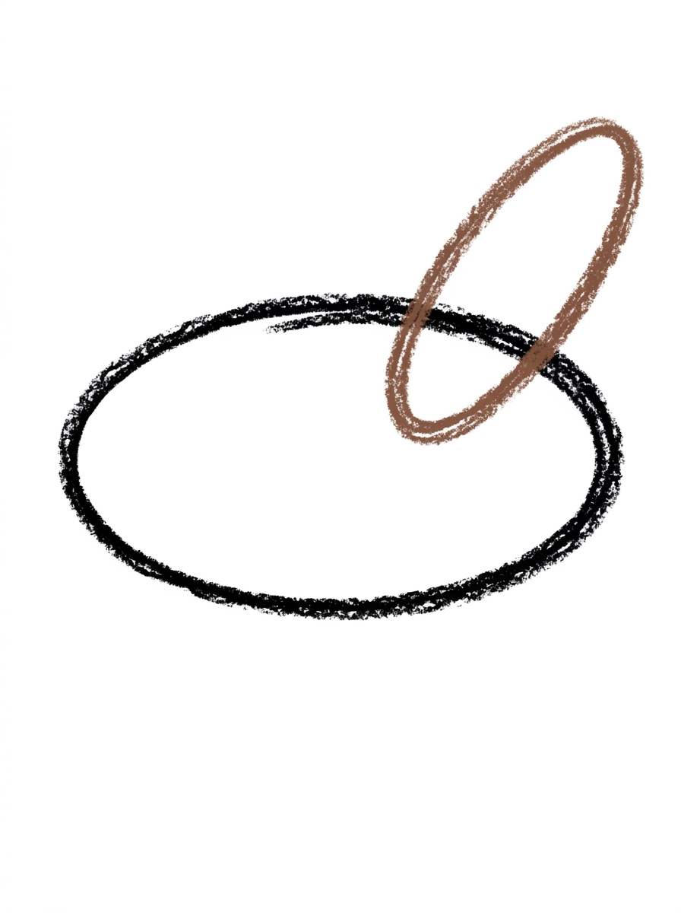
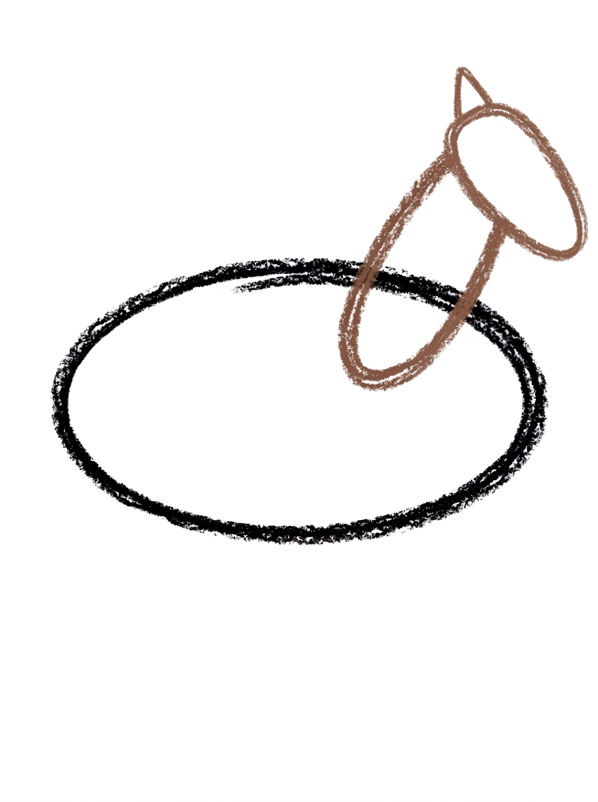
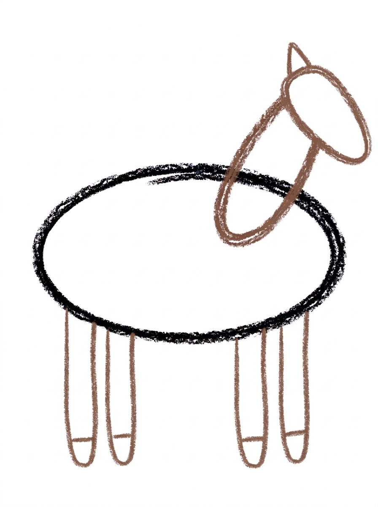
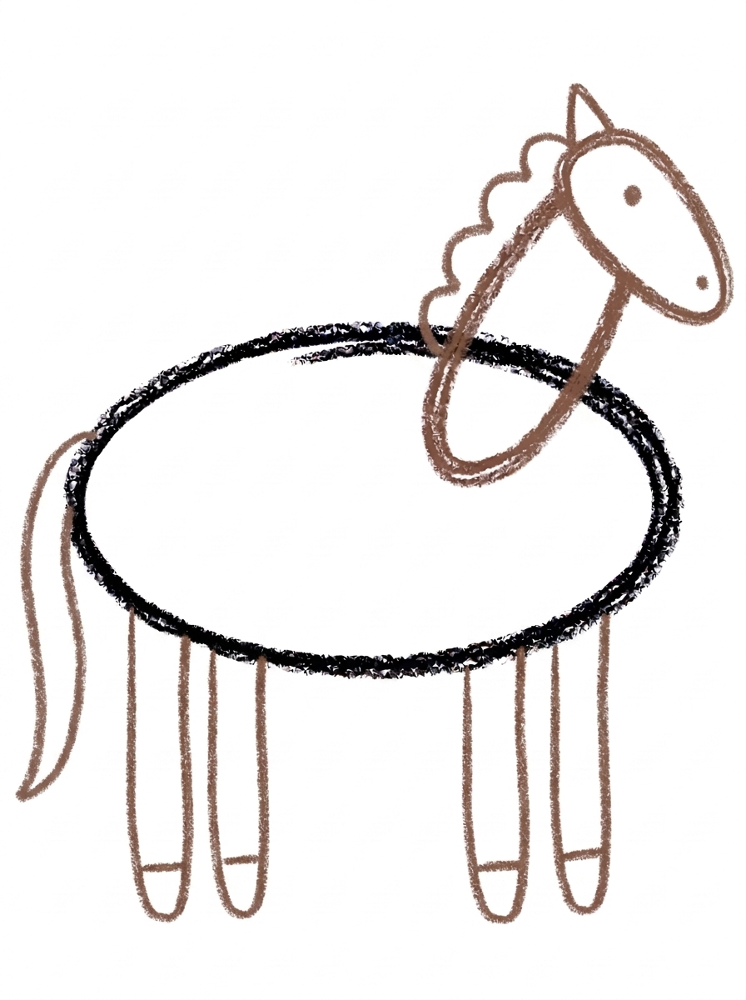

Horse Drawing for Kids How to Draw A Horse in 6 Easy Steps
Quick Answer
Draw a horse from ovals: one big sideways oval for the body, a slanted oval for the neck, a long oval head continuing the neck's line with a triangle ear, four legs with hoof lines, then a wavy mane, tail and dot face before coloring. Made for ages 3 and up — no signup needed, just print and draw.
At a Glance
- Subject: How to draw a horse
- Ages: 3+
- Steps: 6 steps
- Time: ~15 min
- Difficulty: Easy
- Supplies: Paper, crayons
Horses top almost every kid's want-to-draw list, and this one is built entirely from ovals — a big body oval, a slanted neck, and a long head that continues the neck's line like one piece. The wavy mane and curved tail at the end are the details that make the horse suddenly appear.
✏️ Draw Your Horse in 6 Easy Steps
One step per box — this step by step horse drawing shows each new part in a different color so kids can see exactly what changed.
Step 1: The Body

Draw one big oval lying on its side in the middle of your paper. This round shape becomes your horse's body.
Step 2: The Neck

Draw one big slanted oval rising up from the front end of the body at an angle, overlapping the body a little so the two shapes touch. This is your horse's neck.
Step 3: The Head and Ear

Draw one long oval at the top end of the neck, slanting at the same angle as the neck so the head continues the neck's line like one long piece. Its far end is a little narrower and flat — that's the muzzle. Then add one small triangle ear standing on top of the head where it joins the neck.
Step 4: The Legs and Hooves

Draw four long thin legs hanging straight down from the bottom of the body — two near the front and two near the back. Add one short line near the bottom of each leg for the hoof.
Step 5: The Mane, Tail and Face

Draw one wavy mane running down the back of the neck, and one long curved tail hanging from the back end of the body. Then add one round dot eye on the head and one tiny dot nostril at the front tip of the head.
Step 6: Color It In

Color your horse! Warm chestnut brown for the body, neck, head and legs, dark brown for the mane, tail and hooves, and black for the eye and nostril. Great drawing!
📊 Horse Drawing by Age
Every age can join in — just adjust the job.
| Age | What they can do | Tip |
|---|---|---|
| 3-4 | Draw the big body oval and the slanted neck with encouragement, and add legs as simple straight lines. | Draw the body oval large and leave the whole bottom of the page free — the four legs need the space. |
| 4-5 | Build the body, neck and head ovals in order, lining the head up with the neck's angle. | Step 3 is the one to watch: the head slants the same way as the neck, like one long slide, not a ball stuck on top. |
| 6+ | Draw the complete horse alone and refine the mane, muzzle and hooves, then add scenery. | Invite them to add a fence, grass and a saddle to turn the finished horse into a whole pasture scene. |
🖨️ Download Your Free Horse Drawing Printable
The printable lays out all 6 steps one per box, big enough for little hands — kids draw right alongside each step.
⬇️ Open Free Printable 🖨️ Print🎁 Free printable for ages 3+
🐴 Horse Pasture Scene
Give your horse a home. Draw a fence along the bottom of the page with straight horizontal lines, tufts of grass as short zigzag strokes, and a big sun in the corner — then ask your child to name their horse and dictate a sentence about it for you to write underneath. Counting practice hides here too: four legs, four hooves, two ears' worth of detail on one visible ear, and one long tail. Older kids can draw a second, smaller foal beside the horse using the same six steps with smaller ovals.
What You'll Need to Draw A Horse
You need paper, a pencil and crayons or markers. The finished horse uses warm chestnut brown for the body, neck, head and legs, dark brown for the mane, tail and hooves, and black for the eye and nostril. A photograph of a real horse nearby is a nice touch — kids love checking whether their slanted head and neck match the real animal's line.
What They're Learning
This tutorial is a lesson in ovals used three ways: wide for the body, slanted for the neck, and long for the head — the same shape stretched and tilted to build a whole animal. Slanting lines introduce diagonal direction, the mane practices a controlled wavy line, and planning four legs under the body (two near the front, two near the back) builds early spatial reasoning. It also quietly teaches observation: a horse's head continues its neck, which is a real piece of animal anatomy.
Make It Yours
The same six steps make a whole stable of horses: color one white with a gray mane, one black, or add big patches for a pinto. Draw a smaller foal beside the first horse using the same ovals shrunk down, add a simple saddle shape on the back, or give the horse a field of drawn grass and a fence to peek over. For a story-time version, a unicorn is just this horse plus one spiral triangle horn on the head.
🛒 Our Favorite Drawing Supplies
These are the supplies we reach for in our own home — washable (because kids), quality paper, and enough colors to avoid fights.
As an Amazon Associate, MomYouNeedThis earns from qualifying purchases — at no extra cost to you.
💡 Horse Drawing Tips for Parents
Step 3 is the make-or-break moment of this drawing. If the head oval is drawn upright or lying flat across the neck, the outlines cross in a way that confuses the eye and the horse falls apart. Show your child the slide image: the head keeps sliding in the same direction the neck is already going. Drawing it slowly, in one line from the neck, helps more than any amount of erasing afterwards.
For the legs, space them before drawing: two near the front of the body, two near the back, all hanging straight down to roughly the same length, with one short line near the bottom of each for the hoof. If the first horse ends up with legs of four different lengths, call it a horse walking uphill and start a fresh one — a second attempt almost always lands better than a corrected first one.
✏️ Horse Drawing Step by Step
This horse drawing is three ovals before it is a horse: a big oval on its side for the body, a slanted oval rising from its front end for the neck, and a long oval at the same slant for the head. Legs, mane, tail and face all attach to that three-oval frame across the last three steps.
The joint that matters is where the neck meets the body. The steps ask for the neck oval to overlap the body a little, and that overlap is not a detail — it is the glue. If the neck only kisses the body's edge or floats just beside it, a white gap opens between the two shapes and the horse falls into two pieces.
The remedy is to start the neck oval inside the body, drawing its first curve over the body's front end before sweeping it upward. An overlap can always be softened by the chestnut colour in Step 6; a gap cannot.
See free horse printable for more.
✏️ One Shape Per Step, Six Steps Total
The best test in this horse drawing comes before any legs are drawn. Cover Steps 4 to 6 and look at the three ovals alone: run a finger from the back of the body, up the neck and along the head without lifting it. If your finger never crosses empty paper, the frame is joined; if it has to jump a gap, fix that joint now.
After Step 4, count down: four legs, and at the bottom of each leg, one short hoof line — four hoof lines in total. After Step 5, check the mane's address: the wavy line belongs on the back of the neck, the edge away from the face. A mane drawn on the front edge turns into a beard.
Last, the face: one dot eye on the head, and one tiny nostril — and the nostril should sit at the very tip of the head's far end, the muzzle. A nostril placed halfway along the head is the most common reason a finished horse looks puzzled.
See free horse printable for more.
🐴 The Neck-and-Head Trick
Draw the horse a second time facing the other way, and the pair becomes a picture: two horses nose to nose. The steps are identical — the only change is that the neck rises from the other end of the body oval, so the slant of the neck and head flips with it.
It is a genuinely useful second run. The first horse teaches the shapes; the mirrored horse shows whether your child remembers the build or was only copying the picture. Two facing horses also leave a neat gap between their muzzles that kids enjoy spotting.
See free horse printable for more.
❓ Horse Drawing FAQs
What is the easiest way to draw a horse?
Build it from ovals: a big sideways oval for the body, a slanted oval for the neck, and a long oval head that continues the neck's line, with one triangle ear. Four straight legs, a wavy mane and a tail finish it — follow the six steps and the horse appears shape by shape.
What age is this horse drawing for?
It is made for ages 3 and up. Younger kids will need help with the slanted neck and head, while most five- and six-year-olds can follow all six steps with the printable in front of them.
What supplies do we need?
Paper and a pencil for drawing, plus crayons or markers for the coloring step: warm chestnut brown, dark brown and black cover the whole horse. Keep a spare sheet handy — drawing a horse's legs usually takes a practice page first.
Is the printable really free?
Yes — every printable on MomYouNeedThis is 100% free to download and print. No signup, no payment, just tap the download button.
How do I print it?
Open the free PDF and print it at 100% scale, not 'fit to page', so the step pictures come out at the size they were designed. One page is the whole tutorial, and you can print fresh copies whenever your child wants another try.
Why does the head slant the same way as the neck?
Because in a real horse, the head and neck form one long line — the head doesn't sit upright like a person's. In this tutorial the head oval slants at the same angle as the neck oval, which is the single detail that makes the drawing read as a horse instead of a mystery animal.
My child's horse looks like a dog. What went wrong?
Usually the neck came out too short or the head too round, so check Step 2 (a big slanted neck) and Step 3 (a long head with a flatter, narrower muzzle end). The wavy mane down the back of the neck in Step 5 also helps a lot — it is a very horse-only feature.
The mane looks hard. Can my child skip it?
Let them scribble it. A mane is just a wavy line running down the back of the neck, and a crayon scribble in dark brown reads perfectly as horse hair at this age. It does not need to be neat to work.
📚 Keep Exploring
- ✏️ All 53 Drawing Tutorials 53 free step-by-step drawing tutorials for kids.
- 🐾 Animal Coloring Free printable animal coloring pages for little learners.
- ✏️ Drawing Practice Free printable drawing pre-writing worksheet for toddlers.